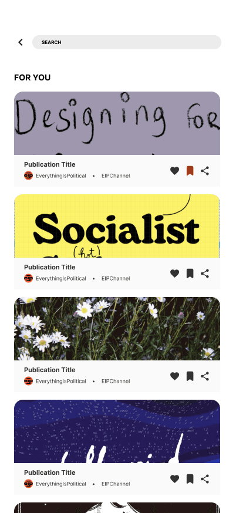
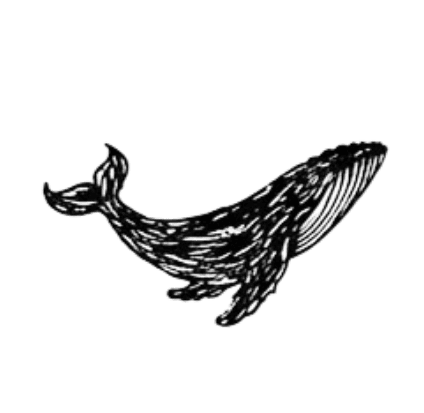

Turning an editorial archive into a place readers can explore
Everything Is Political (EIP) is Slow Factory’s editorial platform. Our team reworked how readers discover, browse, and return to its stories, mobile-first.
What I worked on!
Information architecture and how content is organized
The Explore experience, from wireframes to high-fidelity screens
Design patterns and the shared design system
Accessibility and responsive behavior across devices
Running usability sessions and folding the feedback into V2
Working with PMs and developers on scope and feasibility
one of 4 designers ~ The 200+ screens, competitive analysis, and final scope were shared with the team, PMs, and developers.
The problem
An archive can hold everything. But can readers find anything?
EIP worked as a chronological archive. The work was strong, but finding it was up to the reader.
Everything Is Political · before
The original site: one long grid, one sidebar filter.
What Slow Factory wanted
01Discover moreReaders find stories beyond the latest post.
02Come backFinding something good gives them a reason to return.
03SubscribeReturning readers become subscribers.
It all hinged on readers finding content that felt relevant. But we didn’t know what relevant meant to them.
How might we
help readers discover content that resonates with them, so they keep coming back?
First, we had to define “resonates.”
Research & discovery
Understanding what “relevant” means.
What makes someone feel they found the right piece, not just any piece? Without access to readers, we studied three platforms that already turn discovery into subscriptions.
Medium
Paid access to every article.
Substack
Writers publish straight to subscribers’ inboxes.
Patreon
Supporters pay for a creator’s work.
How they make content feel relevant
Common to all three.
Let readers choose what they seeTopic filters surface what you care about.
Give readers a way to interactLikes, saves, and comments bring people back.
More content isn’t more discoveryA clear layout beats a bigger one.
So, our working definition
Readers don’t come back because there’s more content. They come back when they can easily find what’s relevant to them.
The catch. They serve many publishers at huge scale. Slow Factory is one small nonprofit, so we borrowed patterns, not solutions.
What we didn’t have. No reader interviews. Testing was with admins, so we treated it as directional.
Three iterations
How Explore changed from a big idea to something we could ship.
What could discovery be, what do people reach for, and what can we support today?
Competitors paired editorial picks with social discovery, so V1 stacked three curated sections.
The assumptionFollowing channels and authors would personalize the feed, so readers wouldn’t need filters.
Explore homeThree curated rows

Articles to readEditorial picks, with like and save
Channels to followJoin a topic channel
Authors to followFollow a writer
V2After usability testing
We learned that users wanted more control.
Moderated 1:1 sessions with 4 Slow Factory admins, three tasks each.
Task 01
Find an article you’d want to read.
Task 02
Return to an article you viewed earlier.
Task 03
Find an article within a specific topic.
“
Oh I really like this. I can just pick what topics are most important to me and what I actually want to see.
Maya, Slow Factory admin, during a moderated session
What we foundWhat we changed
Channels weren’t intuitiveUsers didn’t see how they fit browsing.
RemovedChannels replaced with topic selectionA model people already understood.
“For You” felt vaguePersonalized, or picked by editors?
Renamed“For You” became “Editor’s Pick”Says who chose it.
Recently viewed was expectedUsers went looking for a way back.
AddedA Recently Viewed rowRight where they looked.
Topic selection resonatedIt felt like real control.
AddedTopic selection on ExploreReaders shape the page.
Also added: Top Articles, a second way in.
Before · V1
V1 curated rows
Channels to followTopic rowsArt of Resistance, Collective Healing, and more
For YouEditor’s PickSays who chose it
+ Recently ViewedPinned near the top of Explore
+ Top articles this weekA second way into the archive
After · V2
V2 reader-controlled
Who we tested with. Our participants were admins who know the platform well, not everyday readers. Their feedback challenged our assumptions but still needs validating with readers.
V3Final design
The best solution was the one we could actually ship.
Development constraints meant V2 couldn’t ship as designed. With PMs and developers, we checked what each feature needed and kept the two the platform could already support.
What each feature needed
Not “is it valuable?” but “can we support it today?”
Shipped
Taxonomy filteringExisting content tags, no new backendShipped
Recently viewedLocal storage onlyShipped
Deferred, not abandoned
Editor’s PickOngoing editorial upkeepDeferred
Top ArticlesBackend ranking logicDeferred
Likes & savesSocial infrastructureDeferred
Authors to followA future community-focused phaseDeferred
The tradeoff. V3 solves discovery but doesn’t yet build community. The deferred features would turn EIP from an archive into an ecosystem. They’re postponed, not dropped.
Information architecturemy focus
Organizing a large archive so readers don’t have to.
Every article already had tags. The work was choosing which ones readers browse by, and where each appears.
27Locations
ExampleLebanon, Palestine, New York
11Topics
ExampleArt of Resistance, Climate & Culture, Collective Healing
9Issues
ExampleIssue 12
8Series
ExampleMusic Is Political, A Woman Is a School, EIP TV
6Filed under
Used as a filterEssays, Events, Excerpts, Interviews, Music, Visual
61 tags, five attributes. 4 group stories, so they became places to browse. One describes format, so it became a filter.
01
Explore
One row per attribute. A sampler, not the archive.
Series · Topics · Locations · Issues
02
Browse all
Everything in one attribute, with breadcrumbs.
Full list per attribute
03
Narrow
Sort, or filter by format.
Sort · Filter by format
Search uses the same 4 categories.
The final solution
Find what you came for, and pick up where you left off.
Browse by interest, narrow down, and come back to what you were reading.
Final design
Back to the problem
Each piece answers a problem from the original archive.
BeforeNow
Every article looks alike
A clear hierarchyExplore, then an attribute, then a story.
Browsing means scrolling
Rows by interestStart from a topic, series, location, or issue.
One way to narrow
Taxonomy filteringFive attributes, built on tags that already existed.
No way back
Recently ViewedThe first thing on Explore.
What we can and can’t say. We aimed for easier discovery and a stronger path to repeat visits and subscriptions. We haven’t measured either.
Outcome & reflection
A smaller scope. A more shippable experience.
What we delivered
A refined Explore experience with taxonomy filtering and Recently Viewed, scoped to the platform’s existing infrastructure.
How it landed
Usability feedback from Slow Factory admins shaped the final direction. Retention and subscriptions weren’t measured.

Next steps
Launch on Google Play and the App Store, then revisit Editor’s Pick, Top Articles, likes and saves, and Authors to Follow.
Design for the platform you have.
Medium and Substack serve far more publishers. Slow Factory needed something its small team could sustain.
Let testing challenge the plan.
We expected following channels to replace filtering. Testing showed people wanted to pick topics directly.
Valuable isn’t the same as feasible.
Two features that ship beat six that can’t. Next time I’d bring PMs and developers in from V1, so constraints shape the concept instead of trimming it.
 Medium
Medium